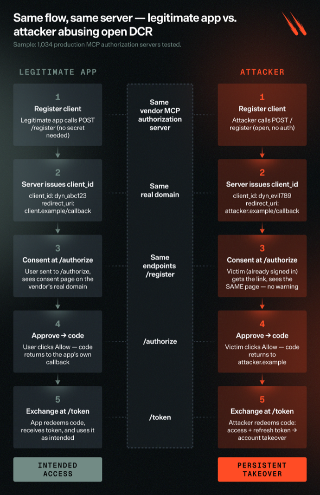

AI Trustfall: MCP Report
Making complex research easier to explore.
An interactive editorial experience for Varonis Threat Labs, designed in Figma and brought to the web with AI-assisted implementation.
A designed experience, carried into production.
The research needed room for findings, attack sequences, and technical detail. I proposed an interactive editorial page instead of another PDF, with multiple ways to enter and explore the story. I wanted to design something that would be engaging and interactive — a more editorial version of the blog posts we publish for the majority of VTL research. I built this page in Figma, used ChatGPT to build it in HTML, and hosted it on Webflow.

One research story, several entry points.
Supporting graphics carry the research into social and editorial channels while maintaining the VTL identity.
Blog Hero
Preview image

Attack diagram